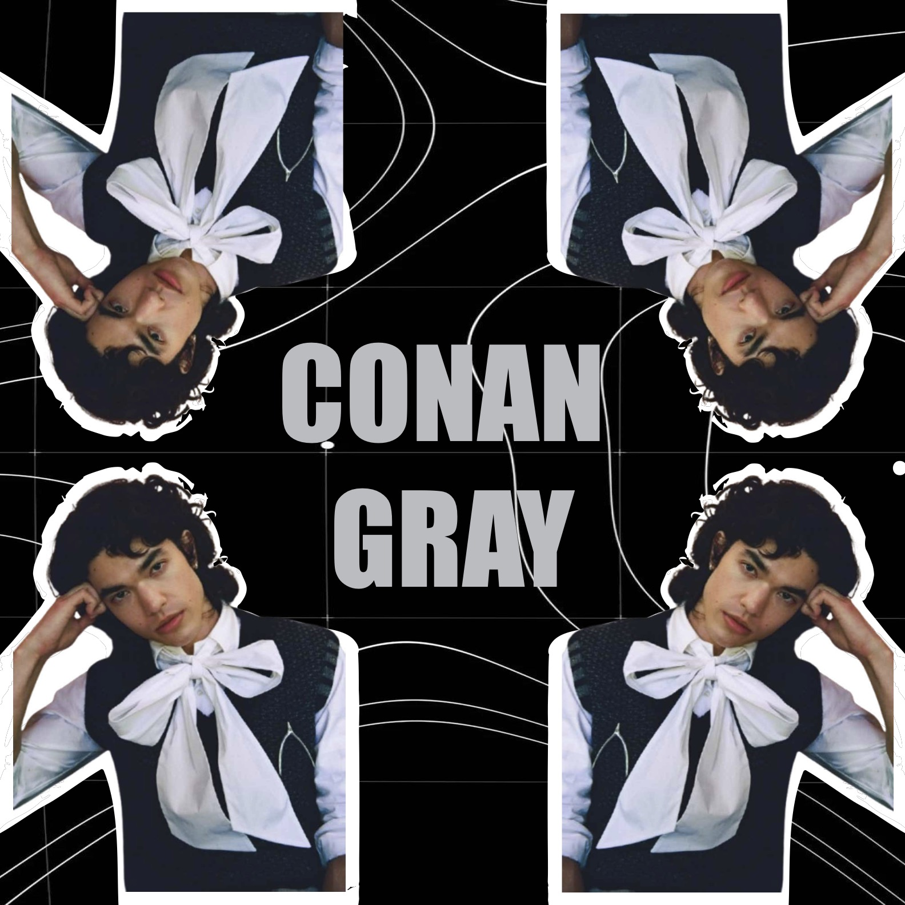
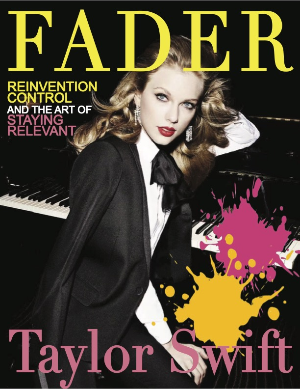
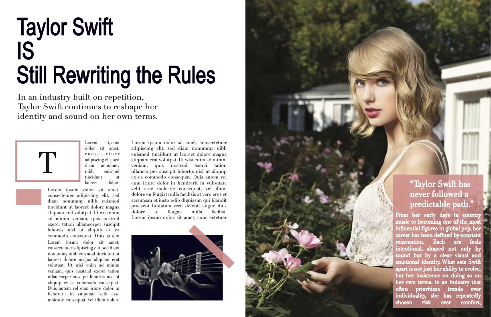
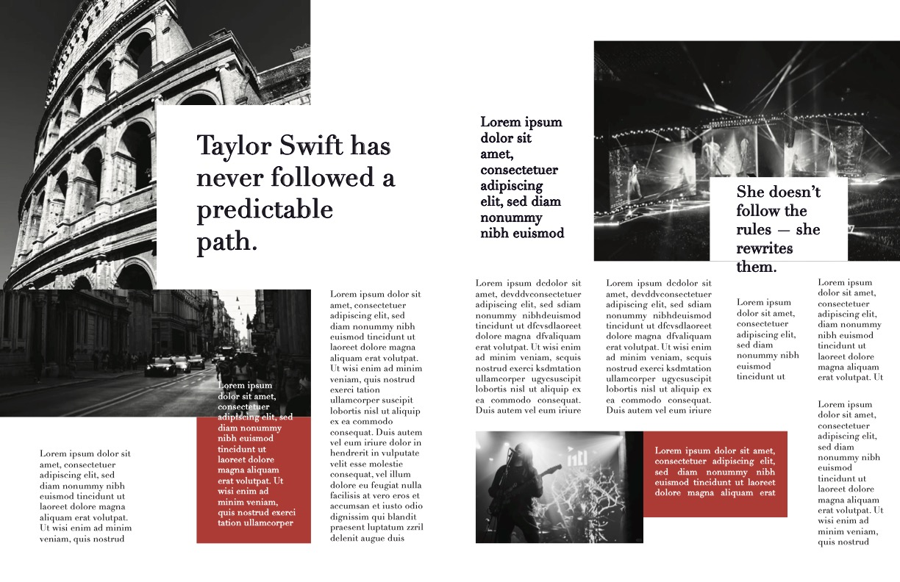
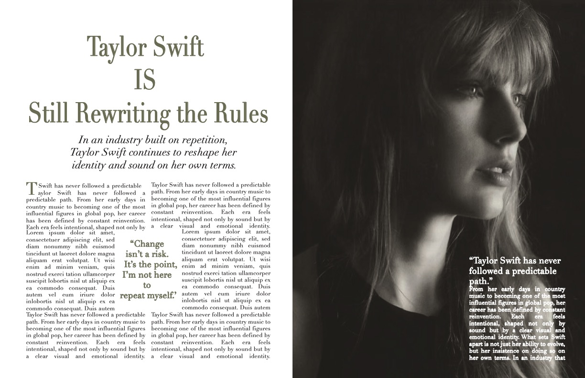
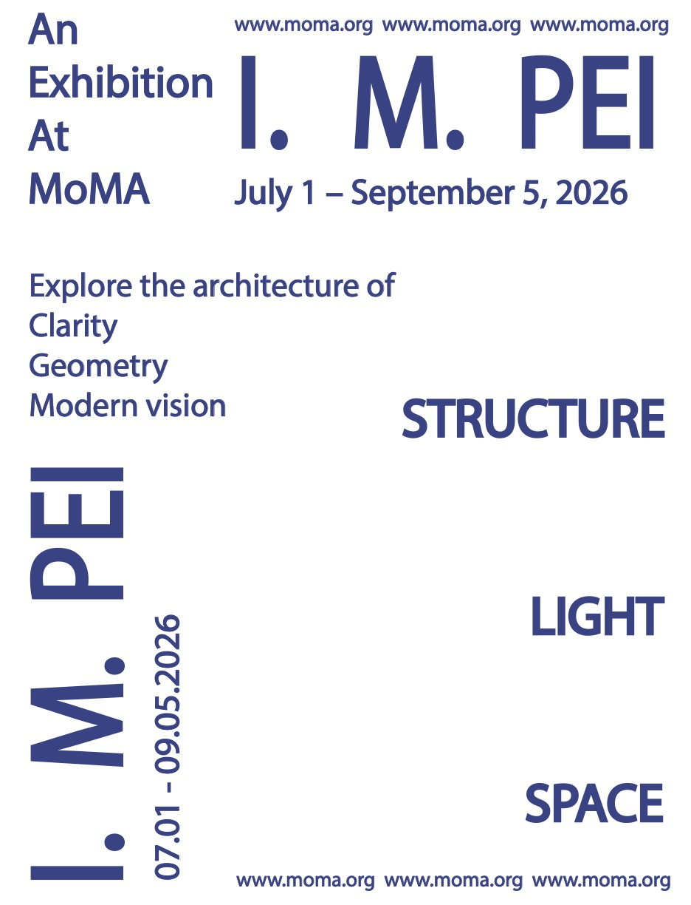
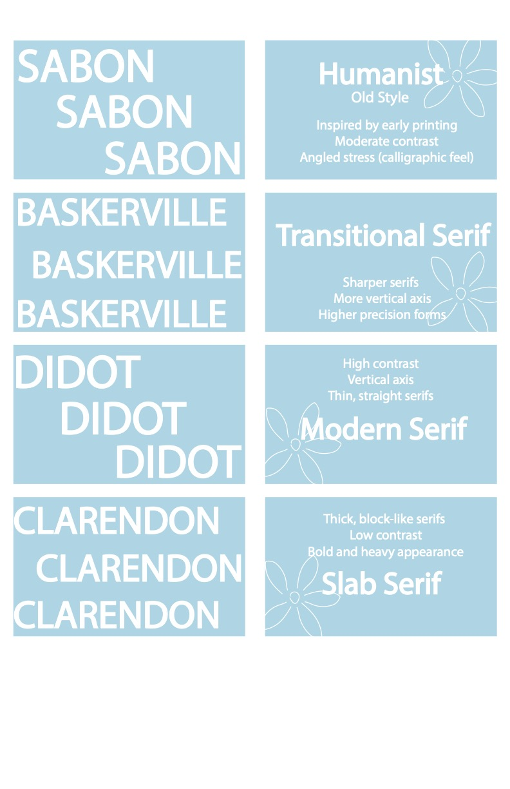
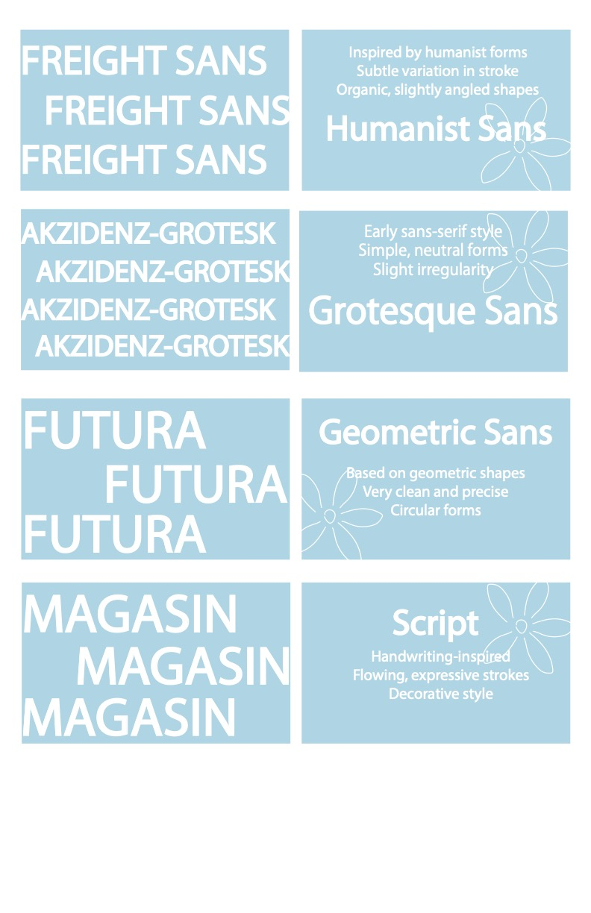
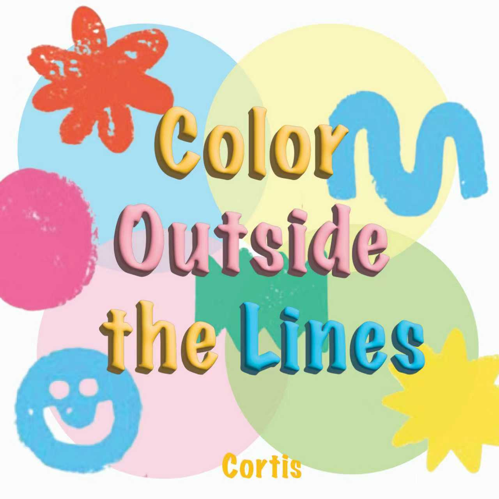

ARTISTIC INQUIRY
Hover over works to reveal full color and details.

Conan Gray Visual

The Fader: Taylor

Editorial Layout

A7 Layout

A6 Layout

MOMA Exhibition

Contrast Poster

Typeface Research

Typography Study
